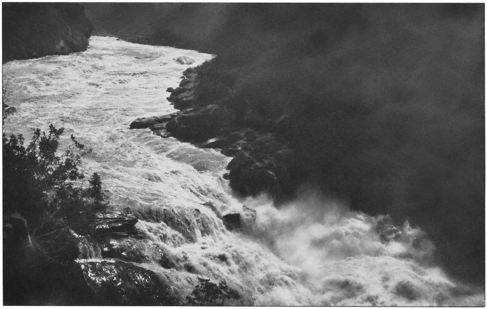
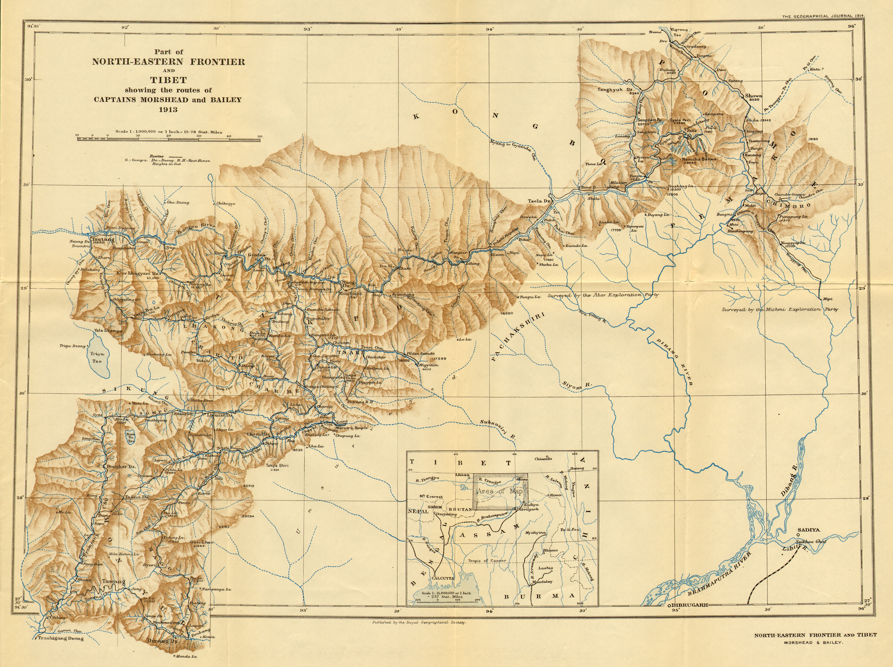

Interactive cartography GEOG 458: Advanced Digital Geographies · Course assignment
Following
the Tsangpo
Following F. M. Bailey, a British political officer serving in Assam, in search of the elusive falls of the Tsangpo–Brahmaputra in 1913.
Open the interactive story
From Pe to the falls
The view from the ferry at Pe shows the river between two steep slopes. Farther downstream, at Pemakochung, he described a small monastery and a drop in the river that appears in one of the expedition photographs. Pemakö, a name that also appears in the sources, refers to a much wider religious and cultural region.
I built the story in four chapters. I chose the stops by reading the expedition map alongside the photographs and Bailey’s account. Clicking a marked place opens the evidence note for that stop. The route and place layers are GeoJSON drawn with Mapbox GL JS.
02 / Reading evidence
The view from Pemakochung

The Pe and Pemakochung photographs are AI-assisted restorations of plates published in 1914. I used the original scans and their captions to interpret the views.
Where the route line ends
Before Gompo Ne, I left the line open. Bailey estimated the junction’s position partly from what Monba hunters told him and partly by comparison with another reach of river. A line drawn all the way to the junction would make that estimate look like a surveyed route.
I kept present-day roads, settlement labels, and political boundaries off this basemap so that readers can follow the historical place names. Readers can slow the map’s flight between stops to inspect the terrain.
View the historical expedition map

04 / Sources and connections
Read alongside the story
Historical and regional sources
- F. M. Bailey, “Exploration on the Tsangpo or Upper Brahmaputra,” The Geographical Journal 44(4), 1914, pp. 341–360, and accompanying map.
- Bailey, Report on an Exploration on the North-East Frontier (1914), and Morshead’s survey-report glossary.
- Kerstin Grothmann, “Population History and Identity in the Hidden Land of Pemakö,” Journal of Bhutan Studies 26 (2012), pp. 21–52.